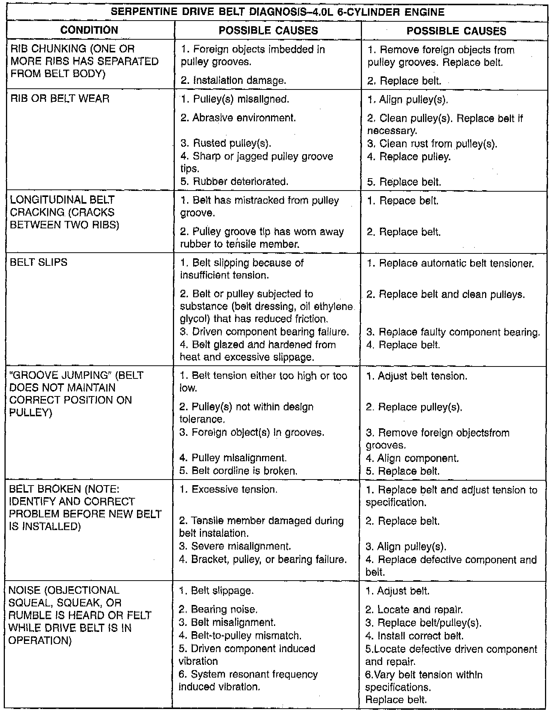
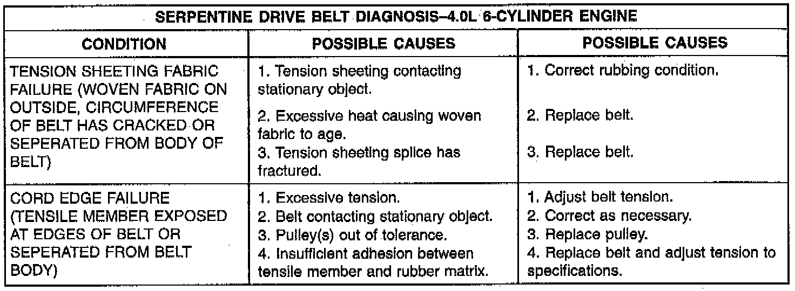
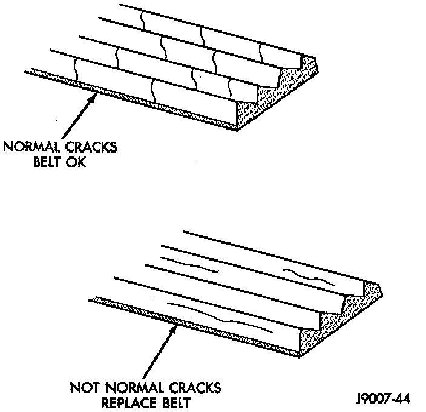

Drive Belt: Testing and Inspection



When diagnosing serpentine drive belts, small cracks that run across ribbed surface of belt from rib to rib, are considered normal. These are not a reason to replace belt. However, cracks running along a rib (not across) are not normal. Any belt with cracks running along a rib must be replaced. Also replace belt if it has excessive wear, frayed cords or severe glazing.